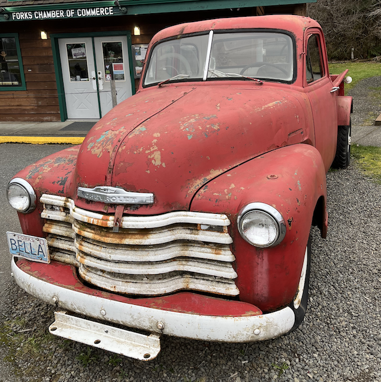

Where Did I Get My Images?
The stunning visuals that bring our image processing examples to life aren't just random pictures; they're a tribute to the breathtaking beauty of Washington State. These images capture the essence of a region known for its diverse geography and inspiring vistas.
Browns Point Lighthouse

Standing guard over Puget Sound, Browns Point Lighthouse is a beacon of maritime history and a symbol of the region's nautical heritage.
Marble Mountain

With its sweeping vistas and challenging terrain, Marble Mountain offers an exciting exploration ground for outdoor enthusiasts. Its peaks and trails are a tribute to Washington's rugged beauty.
Port Angeles
A popular stop for ice cream enthusiasts, the windy Port Angeles Wharf serves as a gateway for travelers heading to Canada or Olympic National Park.
Lake Crescent
Nestled near an elusive restaurant and a charming lodge, Lake Crescent offers breathtaking views and an escape into Washington's tranquil beauty.
Forks

Home to the filming of Twilight, Forks presents a nostalgic scene with Bella's truck, capturing the spirit of the famous series.
Mount Rainier
A majestic sight from the hiking trails, Mount Rainier's peak remains a distant wonder, its beauty inspiring awe without the need to conquer its summit.
San Juan Islands

An early visit to San Juan Islands reveals a peaceful landscape, waiting for the lavender to bloom in the months to come.
Leavenworth
A festive winter wonderland, Leavenworth recalls the times before the pandemic, filled with lively celebrations, beer, and sausage.
Sequim Bay
With boats bathed in the soft glow of sunset, Sequim Bay offers a tranquil scene of coastal serenity.
Broadway

Captured on a tranquil winter's day, this view of Broadway showcases a rare moment of calm on one of Seattle's busiest streets. Stretching all the way to Yesler Terrace, the image paints a peaceful contrast to the normally bustling avenue, offering a contemplative glimpse into the heart of the city.
Little Gray (My Cat)
Meet Little Gray, my delightful cat. While not a Washington landmark, he's a cherished part of my world and adds a touch of whimsy to this collection of images.